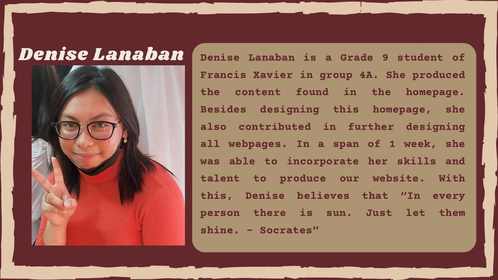

Project Alpas
By Group 4A
Project Alpas is a project proposal created by the members
of Group 4A. With the purpose of supporting Talikala and
their cause. For more details please visit the Background
page.
Talikala is an organization by women for women, and also children, who have been exposed to
prostitution, as they aim to work together in developing a woman’s resilience from the
traumatic abuse, brutality, and mistreatment they have encountered. This institution
protects women's and children's human rights and prevents all forms of violence against them;
this is to improve the quality of life of victims and survivors of trafficking and prostitution.
There's a stigma everyone's familiar with that those people who dabble in prostitution are dirty or unholy. That they could
just get a new job or find some other way to earn cash. Although some people choose this
career, most are usually forced into it due to unemployment or being uneducated to the point wherein you're unable to find a job.
Everyone deserves respect no matter who they are, and since we're in a position where we can help, why not use this to our
advantage to provide for the needs of this institution.
Ways we can help:
Through donating and supporting Talikala and other project proposals that benefit this institution whether it'd be in social media or monetary donations.
(082) 287 4653
talikala.net
talikaladavao@gmail.com
Sputnik Street corner Panganiban Street, Doña
Vicenta Village, Davao City, Philippines
